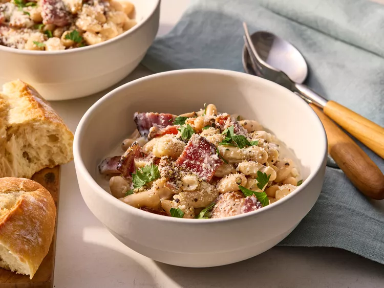

Carbonara Beans
Home

Description:
In these carbonara beans, the beans are the star in a rich, creamy garlic, wine, cheese, and bacon sauce.
Ingredients:
- 4 slices thick-cut pepper bacon, chopped
- 2 cloves garlic, minced
- 1/4 cup dry white wine
- 1/2 cup whipping cream
- 1/2 cup plus 2 tablespoons grated Pecorino Romano or Parmesan cheese, divided
- 1/4 teaspoon cracked black pepper, plus more for garnish
- 2 (14.5 ounce) cans cannellini beans, rinsed and drained
- chopped fresh parsley, for garnish
Steps:
- Gather all ingredients.
- Cook bacon in a large skillet over medium heat until browned and crispy, about 5 minutes. Add garlic and cook 30 seconds more.
- Add wine and simmer until reduced by half, about 3 minutes..
- Add cream and bring just to a simmer. Stir in the 1/2 cup cheese, salt, and cracked black pepper; continue cooking until lightly thickened, stirring often, about 3 minutes.
- Add beans and heat through, about 2 minutes.
- Sprinkle with additional cracked black pepper, remaining 2 tablespoons cheese, and parsley.